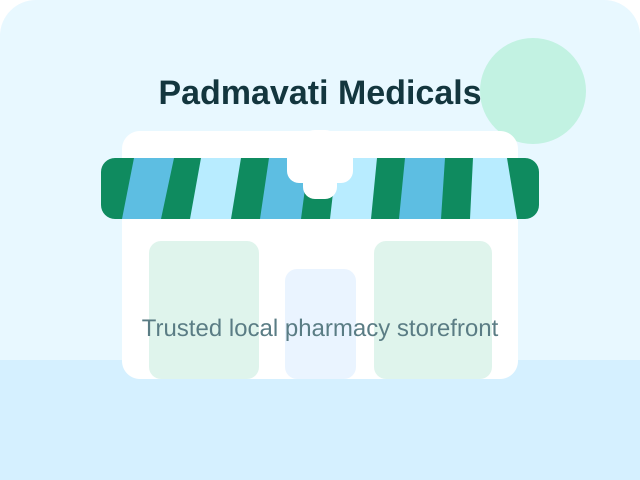
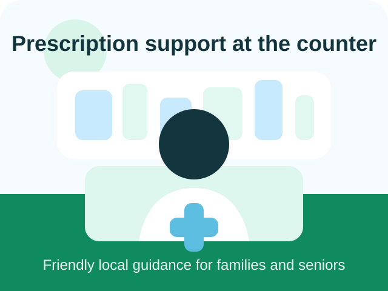

Genuine Medicines
Quality-first pharmacy support focused on trusted and authentic medicines.
Quality medicines, healthcare products, and trusted service for your family.
Quality-first pharmacy support focused on trusted and authentic medicines.
Convenient support for regular treatments, doctor-advised medicines, and monthly refills.
Wellness, immunity, vitamins, and supportive healthcare essentials for the full family.
Customer-first support that makes every call, visit, and WhatsApp order feel easy.
Located at Tin Batti Chat Rasta Chowk on Chandur Road, Padmavati Medicals is positioned for convenient medicine pickups, family health needs, and daily pharmacy support.
Tin Batti Chat Rasta Chowk, Chandur Road, Kagwade Mala, Ichalkaranji, Maharashtra 416115
Phone: +91 97300 86267
Business Hours: Open daily - Morning to 10:45 PM
From prescription medicines to diabetic care and first aid items, Padmavati Medicals brings together the categories local customers ask for most often.
Support for doctor-prescribed treatments, repeat monthly medicines, and ongoing care routines.
Common healthcare products for everyday relief and routine wellness support.
Vitamins, immunity products, nutritional support, and wellness-focused supplements.
Essentials for infants and young children, chosen for family convenience and daily use.
Daily hygiene and self-care items for routine home use and wellness support.
Helpful essentials for diabetic routines and long-term health management.
Practical healthcare items for urgent home needs, wound care, and basic support.
This section highlights the support local shoppers expect from a dependable neighborhood medical store.
Customers choosing a nearby pharmacy often value quick confirmation, clear guidance, and easy repeat purchasing for ongoing treatment routines.
Families appreciate a medical store that combines essential medicine availability with helpful service and an accessible location.
Phone and WhatsApp support make it easier for senior citizens and caretakers to check availability before visiting the store.
Image-led sections help communicate trust, cleanliness, and a dependable medical environment.



Yes. Tap the WhatsApp button or submit the medicine request form to start an order message instantly.
Yes. Use the order form to mention the medicine name and share your prescription image in WhatsApp for confirmation.
The store is positioned near Tin Batti Chat Rasta Chowk on Chandur Road, making it accessible for local walk-ins in and around Ichalkaranji.
Use the emergency call button for immediate phone contact and faster guidance on urgent medicine availability.